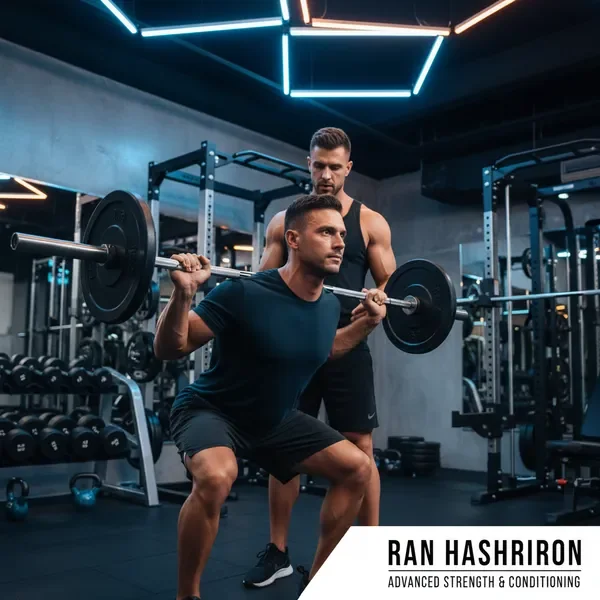
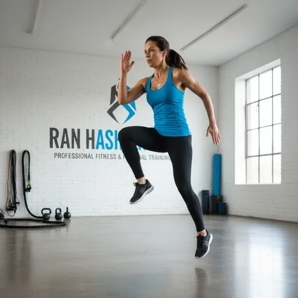
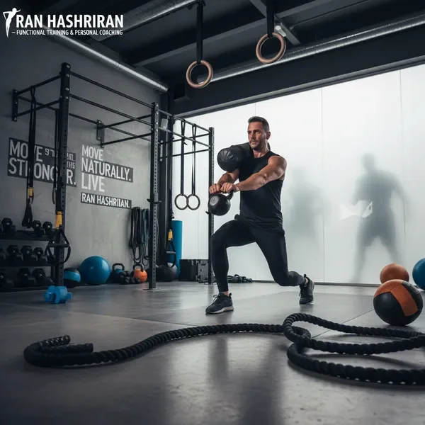
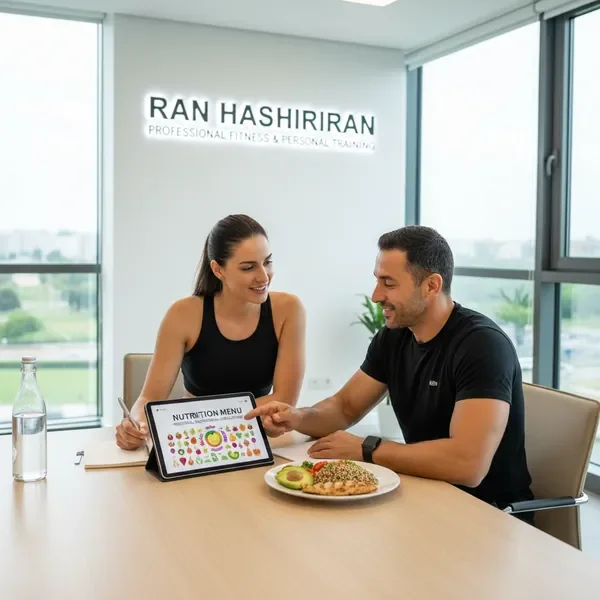
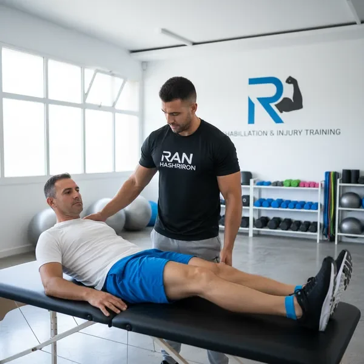

כמאמן כושר אישי מומלץ עם ניסיון רב בעבודה עם מתאמנים בגילאי 30 ומעלה, אני מבין שכל אדם הוא עולם ומלואו. לכן, כל תוכנית אימון שאני בונה היא ייחודית לחלוטין ומותאמת למטרות האישיות, לרמת הכושר הנוכחית, ולמגבלות הפיזיות של כל מתאמן. בסטודיו הפרטי שלי בתל אביב, אתם מקבלים תשומת לב מלאה, סביבה שקטה ומקצועית, וליווי צמוד לאורך כל הדרך.
השירותים המקיפים שלנו

אימוני כוח וחיזוק שרירים
תוכנית אימונים מקיפה לבניית מסת שריר, חיזוק הגוף, ושיפור הכוח הפיזי. האימונים כוללים עבודה עם משקולות, תרגילי התנגדות, ותרגילים פונקציונליים שמחזקים את כל קבוצות השרירים העיקריות. מתאים במיוחד למי שרוצה לחזק את הגוף, למנוע ירידה במסת השריר הקשורה לגיל, ולשפר את היציבה והאיזון.

אימוני קרדיו ושריפת שומן
תוכנית אימונים אירובית שמשלבת ריצה, רכיבה, קפיצות, ותרגילי HIIT (אימון אינטרוולים בעצימות גבוהה). האימונים מותאמים לרמת הכושר האישית ומתקדמים בהדרגה. מושלם למי שרוצה לשרוף קלוריות, לשפר את סיבולת הלב והריאות, ולהגביר את רמות האנרגיה היומיומיות.

גמישות, תנועתיות ומניעת פציעות
תוכנית אימונים ייחודית שמתמקדת בשיפור טווח התנועה, הגמישות, והניידות של המפרקים. האימונים כוללים תרגילי מתיחה דינמיים וסטטיים, תרגילי ניידות, ועבודה על שיפור היציבה. חיוני למניעת פציעות, הקלה על כאבי גב וכתפיים, ושיפור התפקוד היומיומי.

אימונים פונקציונליים
תרגילים שמדמים תנועות יומיומיות ומכינים את הגוף לפעילות בחיי היום-יום. האימונים כוללים תרגילים רב-מפרקיים, עבודה על איזון ויציבות, וחיזוק שרירי הליבה. מתאים במיוחד למי שרוצה לשפר את התפקוד הפיזי הכללי, למנוע נפילות, ולהרגיש חזק ובטוח יותר בפעילויות היומיומיות.

ייעוץ תזונתי וליווי תזונתי
תוכנית תזונה מותאמת אישית שמשלימה את האימונים ומסייעת להשיג את היעדים מהר יותר. הליווי כולל בניית תפריט מותאם, מעקב שבועי, והתאמות לפי הצורך. אני מאמין שתזונה נכונה היא 70% מההצלחה, ולכן אני מספק הדרכה מקיפה ותמיכה מתמשכת.

שיקום פציעות ואימונים מותאמים
תוכנית אימונים מיוחדת למי שמתאושש מפציעה או סובל מכאבים כרוניים. האימונים בנויים בזהירות, מתקדמים בהדרגה, ומתמקדים בחיזוק האזורים הפגיעים ובשיפור התפקוד. עובד בשיתוף פעולה עם פיזיותרפיסטים ומומחי שיקום כשצריך.
אימוני זוגות ומשפחות
אופציה מצוינת למי שרוצה להתאמן עם בן/בת זוג או חבר. האימונים משלבים תרגילים משותפים ואישיים, יוצרים מוטיבציה הדדית, ומאפשרים לכם להתקדם ביחד לקראת היעדים שלכם. גם חסכוני יותר מאימונים אישיים נפרדים!